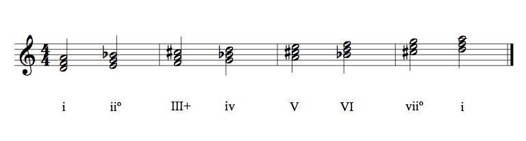

The D harmonic minor scale shares the key signature of F Major. Additionally it has a raised 7th scale degree. Here is the scale.
Next, we have chords built on each scale degree. Note the presence of the C# throughout.

In the last picture the chords are shown with guitar diagrams.